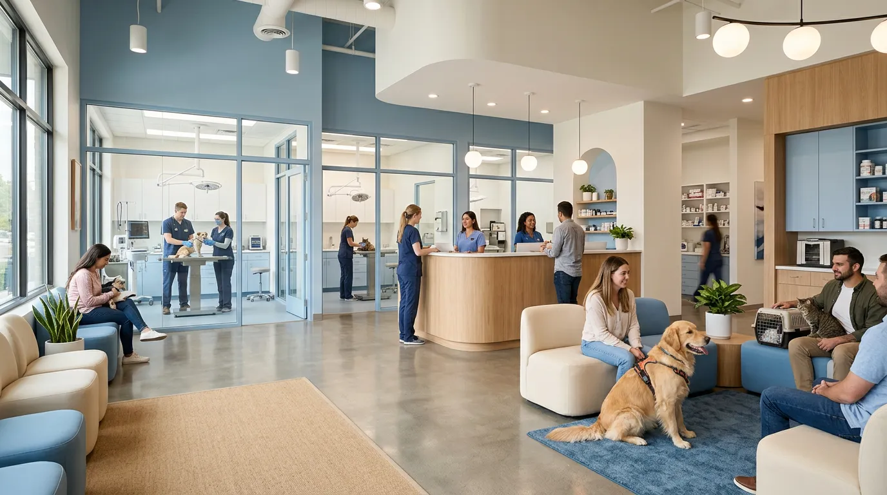
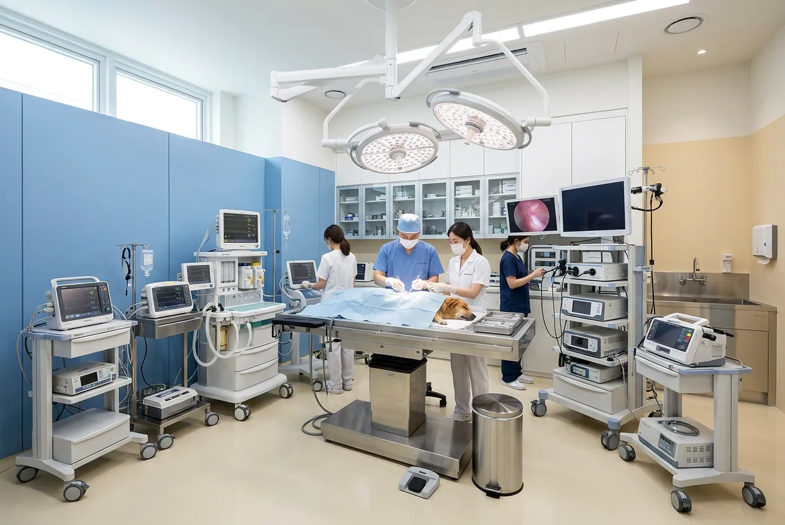
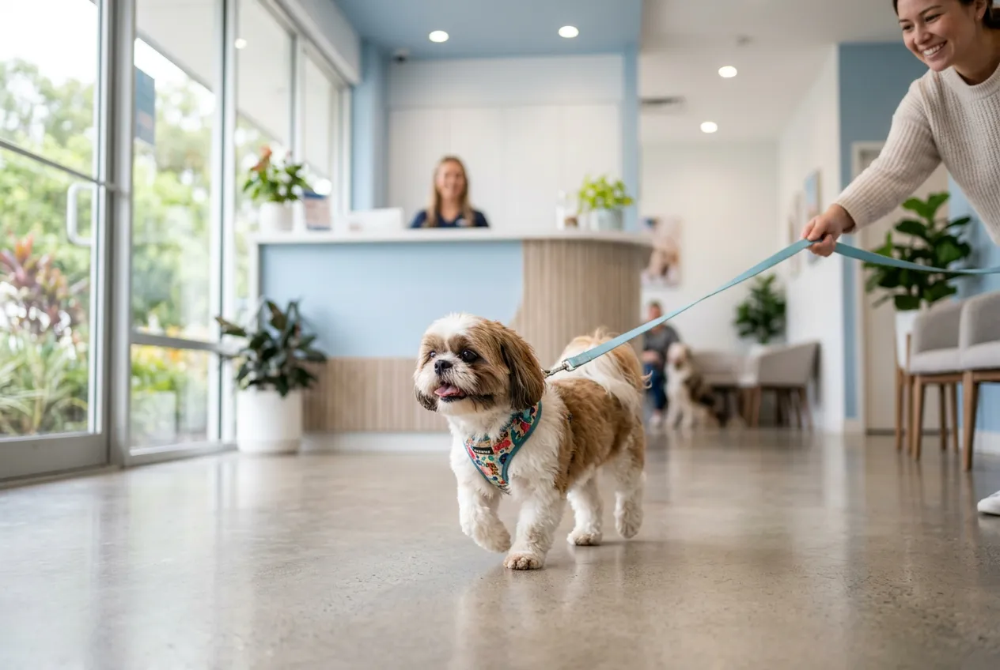
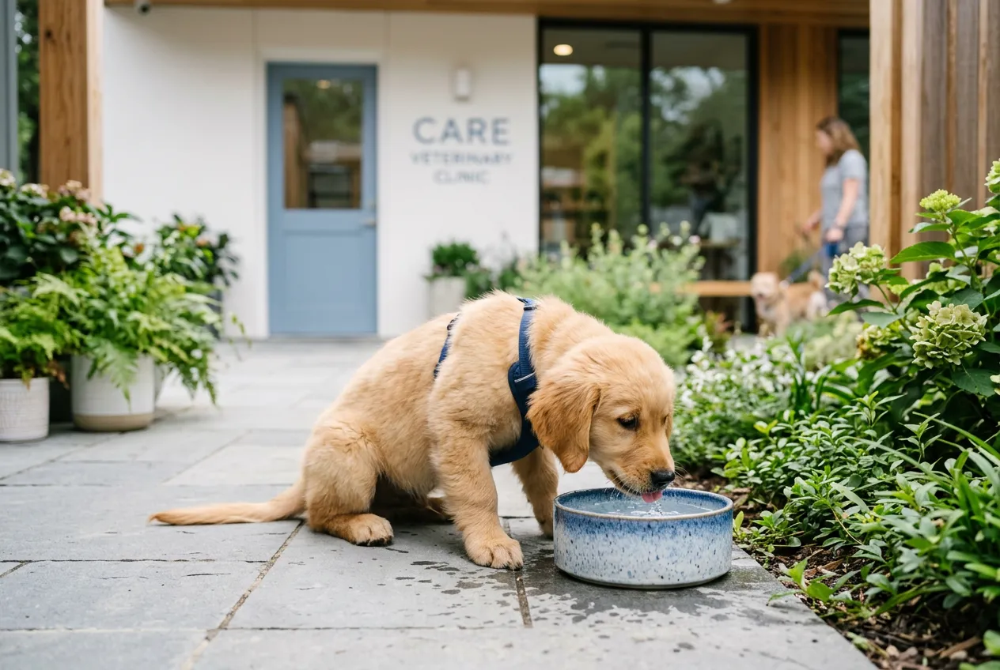
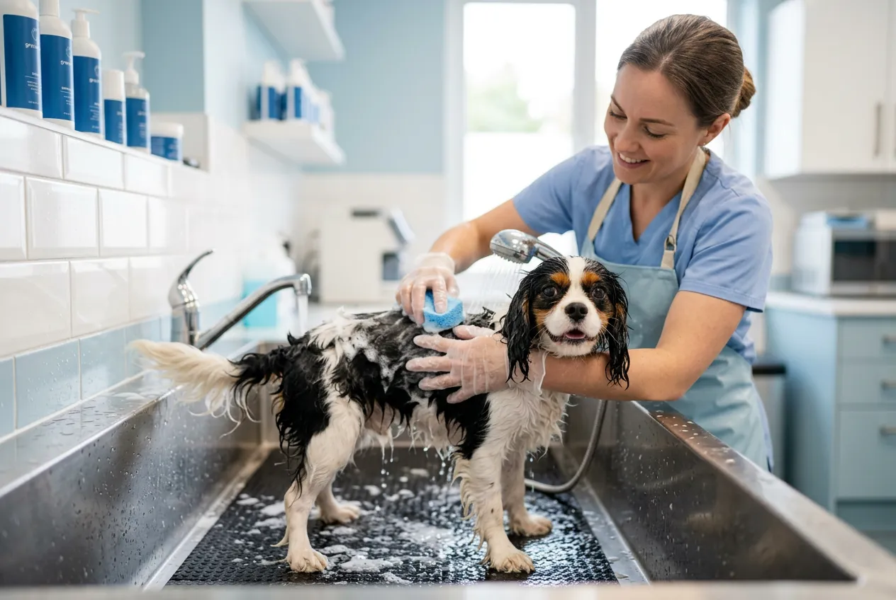

0
년 진료 경력
0
누적 진료 건수
0
전문 수의사
24/7
응급 진료 운영
Our Philosophy
치료를 넘어,
일상을 돌봅니다
벳시그니처는 단순한 치료가 아닌, 반려동물이 건강하게 매일을 보낼 수 있도록 돕는 것을 사명으로 합니다.
자연 친화적인 환경과 근거 기반의 의료가 만나, 가장 편안하고 전문적인 케어를 제공합니다.
진료 분야 알아보기Departments
전문 진료 분야
내과
심장, 호흡기, 소화기, 내분비 질환의 정밀 진단과 체계적 치료를 제공합니다.
외과
정형외과, 신경외과, 연조직 수술까지 첨단 장비로 안전한 수술을 시행합니다.
치과
스케일링, 발치, 구강 질환 전문 치료
피부과
응급/중환자 의학
24시간 응급 진료 체계와 전담 ICU로 위급 상황에 즉시 대응합니다. 응급 전용 라인 운영.
건강검진
CT, MRI, 초음파, 혈액검사 등 종합 건강검진으로 질병을 조기에 발견합니다.

Our Facility
최적의 환경에서,
최선의 진료를
독일 Siemens CT, 디지털 X-ray, 고해상도 초음파, 전용 ICU 등 대학병원급 장비를 갖추고 있습니다.
Medical Team
신뢰할 수 있는 의료진
김태환 원장 DVM, PhD
내과·심장 전문
서울대 수의과 졸업, 미국수의내과학회(ACVIM) 인증. 15년간 심장·호흡기 질환 전문 진료.
박소연 부원장 DVM, MS
외과·정형외과 전문
건국대 수의외과 석사, 일본 동경대 연수. 최소 침습 수술과 관절 재건술 전문.
이준혁 과장 DVM
피부과·치과 전문
한국수의피부학회 정회원, 치과 레지던시 수료. 알러지성 피부염과 구강 질환 전문.
최민서 과장 DVM
응급의학·중환자 전문
응급수의학회 인증의, 24시간 응급 진료 총괄. CCRP 재활 자격 보유.
Health Checkup
건강검진 패키지
반려동물의 나이와 상태에 맞는
맞춤형 건강검진을 제공합니다
Wellness Programs
건강한 일상을 위한
웰니스 프로그램
치료 후 재활부터 비만 관리, 시니어 케어까지. 반려동물의 삶의 질을 높이는 맞춤형 프로그램을 운영합니다.
프로그램 상담받기재활 치료
수술 후 재활, 수중 치료, 레이저 치료
비만 관리
맞춤 식이 처방, 운동 프로그램
시니어 케어
노령 질환 관리, 통증 완화 프로그램
행동 교정
분리불안, 공격성, 스트레스 관리
Pet Life Guide
반려생활 가이드
← 스크롤하여 더 보기 →

봄 · Spring
봄철 산책 가이드
진드기·벼룩 예방 필수. 산책 후 발바닥 체크와 예방접종 일정을 확인하세요.

여름 · Summer
여름철 열사병 예방
뜨거운 아스팔트를 피하고, 충분한 수분 공급과 시원한 환경을 유지해 주세요.
가을 · Autumn
환절기 건강 관리
기온 변화에 민감한 반려동물을 위해 호흡기 관리와 피모 케어를 시작하세요.

겨울 · Winter
겨울철 피부 보호
건조한 겨울, 보습 케어와 적절한 목욕 빈도로 피부 건강을 지켜주세요.
상시 · Year-round
예방접종 일정표
종합백신, 광견병, 켄넬코프, 코로나 — 연령별 필수 예방접종 스케줄을 확인하세요.
FAQ
자주 묻는 질문
24시간 응급 전용 전화(02-415-7582)로 연락 후 내원해 주세요. 야간·공휴일에도 응급 전담 수의사가 상주하고 있어 즉시 진료가 가능합니다.
메리츠화재, KB손해보험, DB손해보험 등 주요 펫보험 직접 청구가 가능합니다. 접수 시 보험 가입 여부를 말씀해 주시면 서류 준비를 도와드립니다.
강아지는 생후 6주부터 종합백신(DHPPL) 2-4주 간격 5회, 광견병 3개월 이후 1회 접종합니다. 고양이는 종합백신(FVRCP) 3회 + 광견병 1회가 기본입니다. 내원 시 맞춤 스케줄을 안내드립니다.
건물 지하 1-2층에 전용 주차장 50대 규모로 운영하고 있습니다. 진료 고객은 2시간 무료 주차이며, 입원/수술 고객은 종일 무료입니다.
건강검진은 사전 예약제로 운영됩니다. 검사 전 8시간 금식이 필요하며, 온라인 또는 전화 예약 시 상세 안내를 보내드립니다.